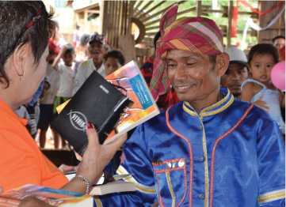

Since 1969, Voice of the Martyrs Australia has been giving hope to persecuted Christians around the world.
AUSTRALIAN-BASED REGISTERED CHARITY
- Since 1969, Voice of the Martyrs Australia has been giving hope to persecuted Christians around the world.
- You can trust that 100% of donations given to Bible Plus, Front Line Ministry, Families of Martyrs, VOMedical or any of our campaigns are used to fund overseas projects.
- Australian-based registered charity VOM is an endorsed deductible gift recipient (DGR) by the Australian government. This means you can claim tax deductions for all donations over $2 (Australian residents only).
PROJECTS
In 2022 VOM Australia financially supported 167 projects in 33 countries.
EVANGELISTS
In 2022 VOM Australia supported 226 evangelists and Bible college students in restricted nations.
BIBLES
In 2022 VOM Australia distributed more than 31,650 Bibles.
OTHER WAYS TO GIVE
VOM App
Donate on your mobile device through the VOM App. It’s quick, simple, and safe- so you don’t need to stress where your gift is going. Learn More
Magazine Gift Slip
With every free magazine distributed we also provide a gift slip with a simple form for donations. Fill out the slip and send it back to us. We’ll take care of the rest. Learn More
Bequest
You can leave a legacy by gifting through your will. We appreciate all donated gifts and make sure your money goes the where it is needed most. Learn More
Shop for Resources
You can leave a legacy by gifting through your will. We appreciate all donated gifts and make sure your money goes the where it is needed most. Learn More
WHY GIVE TO VOICE OF THE MARTYRS?

WE HAVE MORE THAN 50 YEARS HISTORY
100% OF ALL DONATIONS ARE GIFTED
You can trust that 100% of donations given to Bibles and Literature, Front Line Ministry, Families of Martyrs, VOMedical or any of our campaigns, is used to fund overseas projects.
REGISTERED CHARITY ORGANISATION
We are an Australian-based registered charity. VOM is an endorsed deductible gift recipient (DGR) by the Australian government. This means you can claim tax deductions for all donations of $2 or more (Aus residents only).